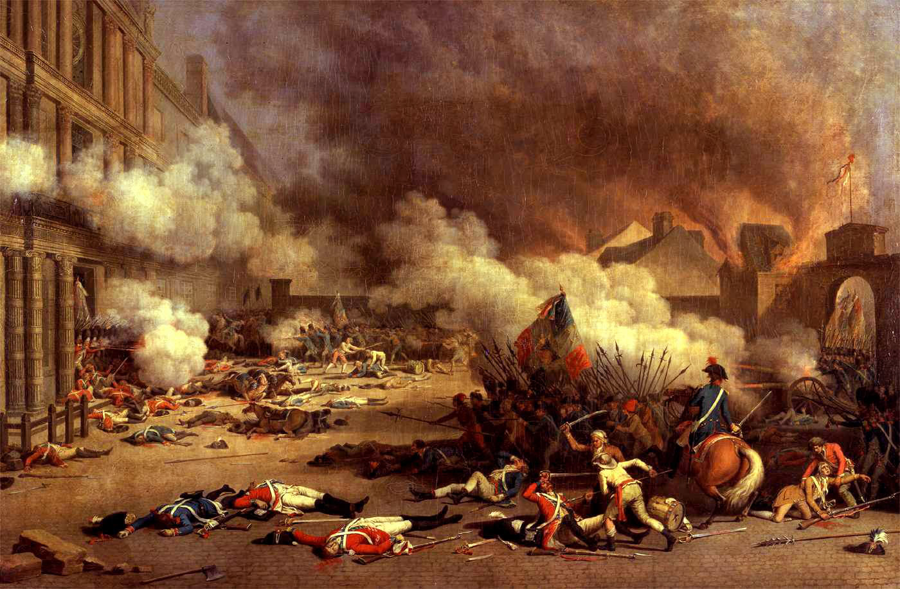

- History of Censorship
in America
- The Internet
it's kind of a big deal
- SOPA
beware our media overlords
Historically
All of this has happened before...

The French Revolution
the Quasi-War (1798-1800)
The Sedition Act
- passed in 1798
- speaking ill of the government was a crime
- punishable by a fine of up to $2,000 and imprisonment for up to 2 years
- 25 arrested; almost half convicted
It was the first...
but not the last

World War II
The Internet
Creative Destruction at its finest
SOPA
the Stop Online Piracy Act
stay vigilent
...all of this will happen again